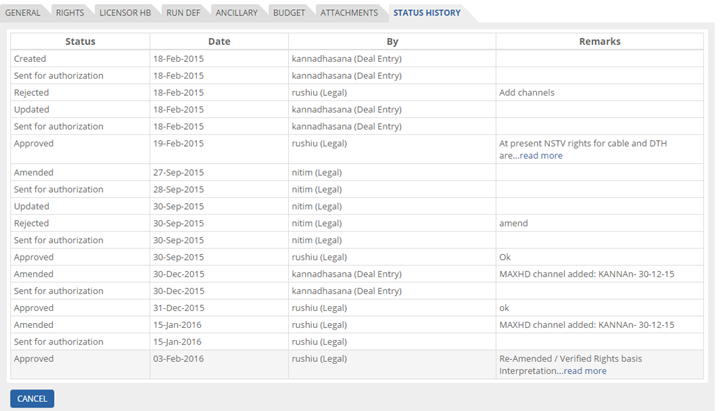

	<section>
		<article>
			<h2>Status History<span></span></h2>
			<div>
				<p></p>
				<p>It shows the history of users who have created, approved, rejected, amended, sent the deal for authorization etc.</p>

				<p>Click on "Status History" tab.</p>

				<div class="triangle-border top">				
					
				</div>

				<p>System shows "Status", "Date of the Deal", By User Name along with role and Remarks if any.</p>

				<p>Once all the information in all tabs has been entered, click on 'Save Deal' button.</p>

				<p>This saved deal will display in Acquisition Deal List page.</p>

				<p>The saved deal before approval when selected will have buttons as: View, Edit, Delete and Send for Approval.</p> 

				<p>The saved deal after approval when selected will have buttons as: View, Renew/Clone, Amendment and Close Title.</p>

				<div class="triangle-border top">				
					
				</div>

			</div>
		</article>
	</section>